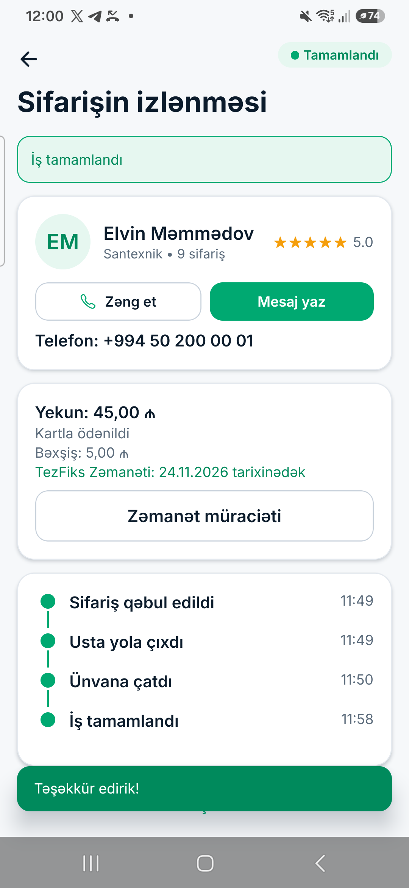
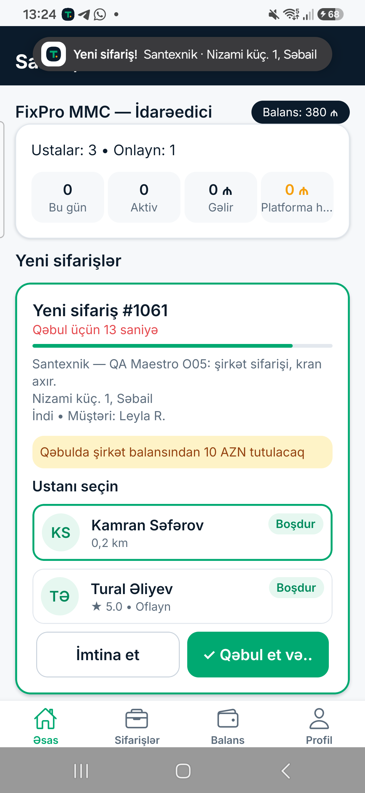
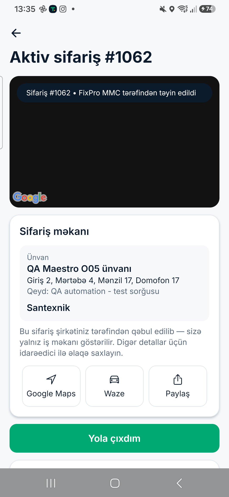
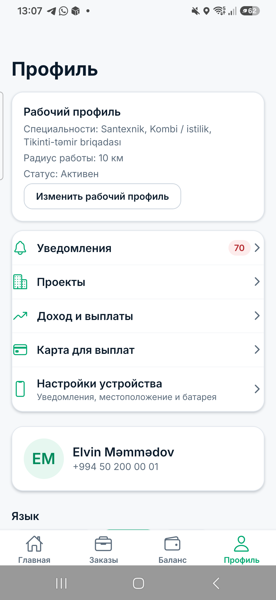
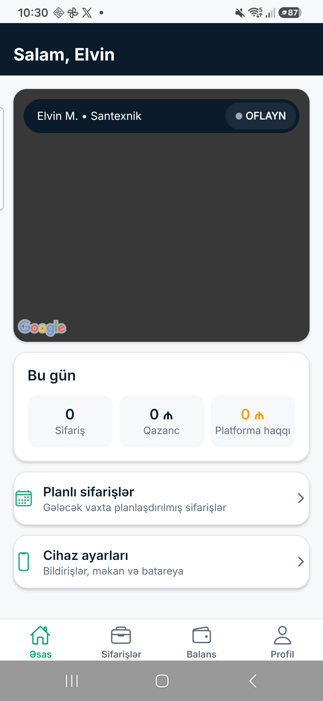
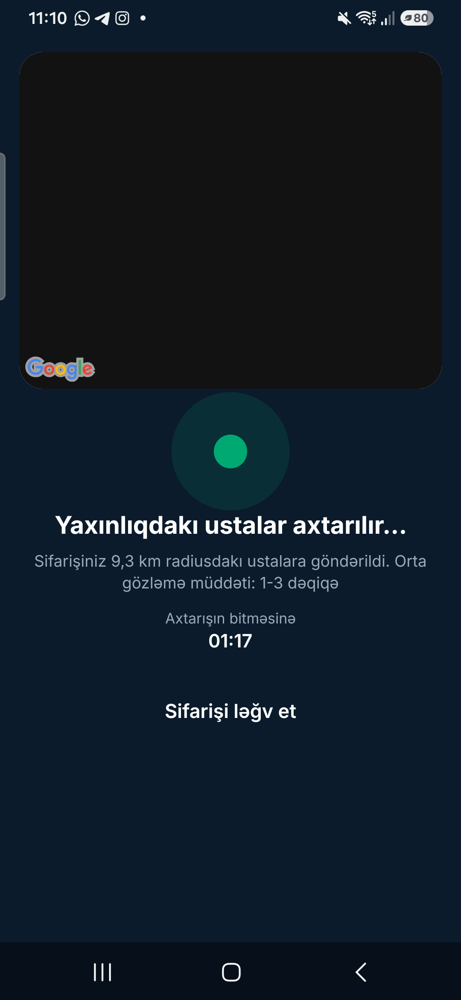

Tarix: 9–10 noyabr 2026 · Mühit: canlı demo (https://evosmart.az/tezfix/api, panel https://tezfiks.evosmart.az/tezfix, DEMO_MODE=true) · Kod: commit 00368ff · APK-lar: /download/ (25.10.2026, v0.1.0) · Cihaz: Samsung Galaxy A24 (SM-A245F), Android 16 · QA: manual (istifadəçi) + automation (Claude)
YENİ 10.11: mobil E2E (Maestro, real telefon) — 7/7 ssenari; AU-F24 "məşğul işçi" tam yoxlandı; 4 yeni bag (BUG-003…BUG-006) və 1 yeni sual (Q-03).
| Dəst | Nəticə | Qeyd |
|---|---|---|
| shared | 34/34 | |
| i18n | 5/5 | az / ru / en açarları eynidir |
| mobile | 201/201 | |
| customer | 383/383 | BUG-001 (flaky) düzəldildi; 2 ardıcıl tam run-da təsdiqləndi |
| pro | 222/222 | |
| panel | 423/423 | next build da uğurludur |
| API typecheck | 0 xəta | |
| API inteqrasiya (692) | işə salınmadı | QA kompüterində Docker yoxdur (Postgres + Redis lazımdır) |
qa/automation)Node test runner + @tezfiks/shared klienti. Hər API cavabı zod kontraktına qarşı yoxlanır. Biznes axınları real demo hesabları ilə işlədilir. Panel testləri brauzerdə işləyir (Playwright + Chrome).
| Fayl | Nə yoxlanılıb | Nəticə |
|---|---|---|
| 01-smoke-auth | Health, public config, APK səhifəsi, OTP girişi, refresh rotasiyası, logout, təhlükəsizlik başlıqları, CORS, stack trace sızmaması | 18/18 |
| 02-contract-sweep | 10 rol × 22 GET endpoint: kontrakt uyğunluğu, cavablarda telefon nömrəsi yoxdur | 11/11 |
| 03-happy-path | Sorğu → təklif → qəbul (10 AZN hold, idempotent) → 5 dəq qalanda əlaqənin açılması → qiymət → kart 4242 → 14 günlük zəmanət → bəxşiş → reytinq; ledger | 13/13 |
| 04-cancellations | Pulsuz ləğv, gəldikdə imtina (−15 / +10), haqqın tutulması, gec ləğv, no-show, strike, slotun yenidən göndərilməsi | 7/7 |
| 05-authz | IDOR, işçi və idarəedici rolları, başqa şirkət, admin endpoint-ləri, bloklanmış və gözləyən usta, işçi görünüşü, KYC faylları | 10/10 |
| 06-validation | Validasiya, XSS, SQL simvolları, fayl yükləmə (8 MB, tip, EXIF), imzalı URL | 8/9 · BUG-002 |
| 07-b2b | Layihə → təklif → geri çəkmə → qəbul → gündəlik hesabat → hesab-faktura (ƏDV) → reytinq | 8/8 |
| 08-misc | TLS, Socket.IO, Accept-Language, səhifələmə, idempotentlik, rədd olunan kart, dəvət linkləri, gecikmə (p95 ≈ 170–190 ms) | 9/9 |
| 09-dispatch | Provider seçimi, şirkət qəbulu, finalPriceEntry, nağd, eyni anda qəbul, 2 slot, təcili, EXPIRED | 11/11 |
| 10-company-panel | Brauzerdə giriş, cookie-lər, bütün səhifələr, real vaxt, 404, az / ru / en, 390 px, socket bileti, yüklənmə | 10/10 |
| 11-extra | Planlı sorğu, nağd avtomatik tamamlanma (10.1 dəq), köhnə işdə çat, payout kartı (maska, Luhn) | 6/6 |
| 12-b2b-expiry | Təklifsiz layihə 6 dəq sonra EXPIRED | 1/1 |
| 13-busy-worker YENİ | AU-F24 tam: məşğul işçi (Kamran) namizəd siyahısında busy: true, onunla qəbul → 409 WORKER_UNAVAILABLE, şirkətin hold-u dəyişmir; boş işçi (Tural) ilə qəbul → +10 AZN hold. Əlavə: oflayn işçi ilə qəbul (Q-03) | 5/5 |
| Cəmi | 117/118 | |
Saytdakı APK-lar (tezfiks.apk, tezfiks-usta.apk) Samsung Galaxy A24-ə quraşdırıldı, Maestro 2.12.1 Wi-Fi debugging ilə işlədi. Telefon tətbiqin bir tərəfini, API driver-i (qa/automation/mobile-driver.mts) qarşı tərəfi oynadı. Hər ssenaridən sonra nəticə API ilə də yoxlandı. Ssenarilər: qa/maestro/, ekran görüntüləri: qa/maestro/shots/.
| ID | Ssenari | Nə yoxlanılıb | Nəticə |
|---|---|---|---|
| O01 | Mövcud 4 ssenari (e2e/maestro) × 5 ekran ölçüsü | small 720×1280, standard, böyük şrift 1.3×, tall-hd 1440×3120, short-wide 1080×1920 + telefonun öz ekranı. Yerləşmə problemi görünmədi. | 12/12 run |
| O02 | Customer: tam axın | Sorğu → usta qəbul edir → izləmə → qiymət 35 + 10 → ödəniş ekranı 45 ₼ → checkout (test kartı 4242) → 5 ₼ bəxşiş (ikinci checkout) → 5 ulduz. API: COMPLETED, ödəniş SUCCEEDED, bəxşiş 5 ₼, zəmanət 14 gün, haqq tutulub. | ✓ |
| O03 | Customer: ləğvlər | Pulsuz ləğv: "Ləğv pulsuzdur", geri sayım, CANCELLED_FREE, heç nə tutulmur. Gec ləğv: "15,00 ₼ cərimə tutulacaq", müştəri −15, usta haqqı geri + 10 kompensasiya. | ✓ |
| O04 | Pro (Elvin): tam axın | Onlayn → təklif pəncərəsi → qəbul → "Yola çıxdım" → "Gəldim" (təsdiq) → klaviatura ilə 35 + 10 → təsdiq → müştəri nağd → "Tamamlandı", vaxt xətti, 45 ₼, haqq 10 ₼. "Bu gün" kartı: 2 sifariş, 90 ₼, −20 ₼ (doğru). | ✓ |
| O05 | Pro (Rauf, şirkət rejimi) | FixPro idarəedici ekranı, təklif kartı (15 s, haqq xəbərdarlığı), işçi siyahısı, tək onlayn işçi avtomatik seçilir, "Qəbul et" → iş Kamrana təyin olunur. | ✓ |
| O06 | Pro (Kamran, işçi) | Məhdud görünüş: ünvan, kateqoriya, şirkət, müştəri adı var; problemin təsviri, qiymət və məbləğ yoxdur. | ✓ |
| O07 | Pro: dil və statuslar | Dil keçidi RU / EN / AZ (BUG-005); Samir — "Yoxlama prosesi", onlayn düyməsi yoxdur; Vüqar — "Hesab bloklanıb", onlayn düyməsi yoxdur. | ✓ (BUG-005) |

O02: tamamlandı
O05: şirkət təklifi
O06: işçi görünüşü
O07: RU (BUG-005)| Ciddilik / Prioritet | Yüksək / P2 |
|---|---|
| Təkrarlanma | Həmişə (bütün açılışlarda) |
| Komponent | pro app (ana ekran, iş ekranı) və customer app (axtarış, izləmə ekranları) |
| Mühit | tezfiks-usta.apk / tezfiks.apk (/download/, 25.10.2026), Samsung A24, Android 16 |
| Addımlar | 1. APK-nı saytdan quraşdırın. 2. Elvin ilə daxil olun. 3. Ana ekranda xəritəyə baxın, 20 s gözləyin. (Customer: sifariş verin → "Yaxınlıqdakı ustalar axtarılır".) |
| Gözlənilən | Xəritə görünür. |
| Faktiki | Xəritə qara qalır, yalnız "Google" loqosu görünür. adb logcat:
E Google Android Maps SDK: Authorization failure. E Google Android Maps SDK: Ensure that the "Maps SDK for Android" is enabled. E Google Android Maps SDK: API Key: AIzaSyC7…vrjEg E Google Android Maps SDK: Android Application (<cert_fingerprint>;<package_name>): 5E:8F:16:06:2E:A3:CD:2C:4A:0D:54:78:76:BA:A6:F3:8C:AB:F6:25;az.tezfiks.usta |
| Səbəb | SHA1 5E:8F:…:F6:25 React Native şablonundakı açıq debug.keystore-a məxsusdur. build.gradle-də release build da signingConfigs.debug ilə imzalanır (sətir 115). Maps açarı bu imzaya icazə vermir və ya "Maps SDK for Android" aktiv deyil. |
| Təklif | Tez: Cloud Console-da açarın Android məhdudiyyətinə 5E:8F:…:F6:25;az.tezfiks.usta və …;az.tezfiks.app əlavə edin. Düzgün (Play-dən əvvəl): öz release keystore-u ilə imzalayın və onun SHA1-ini açara əlavə edin. Açıq debug keystore ilə imzalanmış APK-nın üzərinə istənilən kəs eyni paket adı ilə "yeniləmə" quraşdıra bilər. |

pro: ana ekran
customer: axtarış| Ciddilik / Prioritet | Orta / P2 |
|---|---|
| Təkrarlanma | Həmişə: 4 cəhddən 4 (telefonda 2, API ilə 2). Kontrol: usta əvvəlcədən onlayn olanda 2/2 təklif gəlir. |
| Komponent | API: dispatch (apps/api/src/modules/requests/dispatch/dispatch.service.ts) |
| Hesablar | Müştəri +994 55 200 00 24 (Demo Müştəri), usta +994 50 200 00 01 (Elvin, santexnik, radius 10 km). Sorğular: #1048, 01a1c45d-7cd4-…, 01a1c469-57a0-… |
| Addımlar | 1. Elvin oflayn. 2. Demo Müştəri "İndi" santexnik sorğusu yaradır. 3. 2–5 s sonra Elvin sorğunun ünvanında onlayn olur. 4. 100 s gözləyin. Skript: qa/automation/diag-late-online.mts. |
| Gözlənilən | Spesifikasiya: son "wide" addımı = "k5 plus providers whose declared service area covers the request cell". Elvin ünvandadır və ərazisi ünvanı əhatə edir — təklifi almalıdır. |
| Faktiki | Təklif gəlmir, sorğu EXPIRED. Müştəri "usta tapılmadı" görür, halbuki usta yanındadır. Mobil tətbiqdə də təkrarlanır: usta "Onlayn" basan kimi yaradılan sorğu ona çatmır (ilk yer yeniləməsi gec gəlir). |
| Səbəb / təklif | Hər addım yalnız yeni halqaya göndərir. wide addımında (sətir 333–346) xidmət ərazisi namizədləri known ilə süzülür: known = diskdəki bütün onlayn ustalar, o cümlədən heç vaxt təklif almamışlar. Təklif: known yalnız bu sorğuya artıq təklif almış ustalar olsun (təkrar təklif onsuz da qadağandır). Production taymerlərində (ring 30 s) pəncərə daha böyükdür. |
| Ciddilik / Prioritet | Aşağı / P3 |
|---|---|
| Təkrarlanma | Həmişə (RU və EN) |
| Addımlar | 1. Elvin ilə daxil olun (AZ). 2. Profil → Dil → Русский, sonra English. 3. "İş profili" kartına baxın. |
| Gözlənilən | RU: "Сантехник, Котлы и отопление, Ремонтная бригада"; EN: "Plumber, Boilers & heating, Renovation crew". API bunları düzgün qaytarır (GET /pro/profile + Accept-Language). |
| Faktiki | Başlıqlar tərcümə olunur ("Специальности:", "Trades:"), adlar AZ-da qalır: "Santexnik, Kombi / istilik, …". Tab dəyişəndə də yenilənmir. |
| Təklif | Dil dəyişəndə serverdən gələn lokallaşdırılmış sorğuları yenidən yükləyin (invalidateQueries və ya query key-ə locale). Customer app ayrıca yoxlanmayıb. |
| Ciddilik / Prioritet | Aşağı / P3 |
|---|---|
| Təkrarlanma | Həmişə (2/2) |
| Komponent | pro app: components/CompanyHome.tsx, düymə company-offer-accept-<id> |
| Mühit / hesab | Samsung A24 (1080×2340, 450 dpi, şrift 1.0) · Rauf +994 50 200 00 11 (FixPro idarəedici) |
| Addımlar | 1. Rauf ilə daxil olun, şirkət rejimi. 2. FixPro-ya şirkət sifarişi gəlsin (Leyla, providerPreference: COMPANY). 3. Təklif kartının altındakı düymələrə baxın. |
| Gözlənilən | Düymənin mətni tam oxunur. |
| Faktiki | "İmtina et" yanındakı yaşıl düymədə "✓ Qəbul et və.." görünür, mətnin sonu kəsilib. |
| Təklif | Mətni qısaltmaq ("Qəbul et"), düymələri alt-alta qoymaq və ya adjustsFontSizeToFit. Böyük şriftdə (1.3×) daha pis ola bilər. |
| Ciddilik / Prioritet | Aşağı / P3 |
|---|---|
| Təkrarlanma | Həmişə |
| Komponent | API: files (apps/api/src/modules/files/files.service.ts), AU-D08b |
| Addımlar | 1. POST /files ilə REQUEST_PHOTO yükləyin (və ya GET /me). 2. url-də exp parametrinə baxın. |
| Gözlənilən | Spesifikasiya §12: "Signed URLs (HMAC, 10 minutes)" (keş bucket-i ilə ~10–15 dəq). |
| Faktiki | exp ≈ 57 dəq sonradır. FILE_URL_TTL_SEC standart dəyəri 3600-dür (apps/api/src/config/env.ts:42). |
| Təklif | FILE_URL_TTL_SEC=600, ya da 1 saat qəsdəndirsə spesifikasiyanı yeniləyin. |
| Ciddilik / Prioritet | Aşağı / P3 |
|---|---|
| Fayllar | apps/customer/test/login-flow.test.tsx, apps/customer/test/restore-session.test.tsx |
| Düzəliş | İlk waitFor-a { timeout: 10_000 }, test limiti 30 s. Assertion-lar dəyişdirilmədi. 2 ardıcıl run-da 383/383. Commit olunmayıb, developerin təsdiqini gözləyir. |
| № | Sual |
|---|---|
| Q-01 | Azərbaycandan kənar ünvanla sorğu qəbul olunur. London koordinatları ilə POST /requests 201 qaytarır və sonda EXPIRED olur. Xidmət zonası yoxlaması lazımdırmı? (AU-K01b) |
| Q-02 | "Gəldikdən sonra imtina" 5 dəqiqəlik pulsuz pəncərədə də 15 AZN cərimə tutur (policy.ts → cancellationOutcome). Usta 5 dəqiqədən tez gəlsə, cərimə nəzərdə tutulubmu? (AU-F07) |
| Q-03 YENİ | Şirkət oflayn işçini sifarişə təyin edə bilir. Şirkət təklifinin işçi siyahısında oflayn Tural online: false, busy: false ilə görünür ("Oflayn · Boşdur"), company.acceptOffer { workerIds: [Tural] } ilə qəbul uğurludur. Qəbul yoxlaması (offers.service.ts:378–386) üzvlük, status, ixtisas və məşğulluğu yoxlayır, onlayn olmanı yoxlamır. Spesifikasiya şirkətin təklif alması üçün "ən azı bir onlayn və boş işçi" tələb edir, seçim barədə susur. Qəsdəndirmi (menecer zəng edib çağırır), yoxsa qadağan olmalı / xəbərdarlıq göstərilməlidir? (13-busy-worker.test.mts) |
otp.service.ts:18-19). Tövsiyə: .env ayarına çevirin və ya demo serverdə QA IP-sini azad edin.GOOGLE_MAPS_SERVER_KEY olmayanda spesifikasiyaya uyğundur; real buraxılışdan əvvəl açar lazımdır.autocomplete="off" düşünülə bilər.| Sahə | Testlər | Nə lazımdır |
|---|---|---|
| Admin API və admin panel: KYC, blok, strike, audit, tənzimləmələr, demo botları, balans düzəlişi, aşağı balans/borc, qiymət mübahisəsi, zəmanət, hesab-faktura ödənişi, payout, KYC fayl keşi, admin panel UI | ~22 | QA admin hesabı (qa/admin-pending.md) |
| Rate-limit (OTP, admin login brute-force) | 2 | Developerin icazəsi (demo telefonlarını ~1 saat bloklayır) |
| API inteqrasiya dəsti (692) | 1 | Docker olan kompüter |
| Retest (BUG-002…006 düzələndən sonra) | — | Developerin düzəlişləri |
| Manual test (~85 yoxlama) | — | Davam edir; nəticələr Hesabat №2-də |
qa/maestro) və API dəsti yenidən işlədilir.